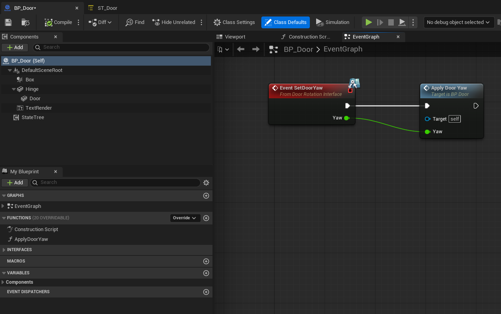

Hello, today I'll show how to use custom UE interfaces for my StateTree. It's probably an overly complex thing to do for such a simple task. But as part of learning more about the UE system, I don't mind leaving it like that for now.
In this example I'll create an interface in C++ to call an event in my BP. It could be any actor BP, by the way, as long as it has this interface implemented. Here I'm using a door, and all I want to do is pass it an angle to rotate to.
The interface
First, here's the interface. It has just one function, SetDoorYaw, which takes an angle in degrees.
DoorRotationInterface.h
#pragma once
#include "CoreMinimal.h"
#include "UObject/Interface.h"
#include "DoorRotationInterface.generated.h"
UINTERFACE(BlueprintType, Blueprintable)
class NPC_SYSTEM_API UDoorRotationInterface : public UInterface
{
GENERATED_BODY()
};
/** Contract for doors whose yaw can be set by gameplay code. */
class NPC_SYSTEM_API IDoorRotationInterface
{
GENERATED_BODY()
public:
/** Apply the requested door angle, in degrees. */
UFUNCTION(BlueprintCallable, BlueprintImplementableEvent, Category = "Door")
void SetDoorYaw(float Yaw);
};The Blueprint side
In the Blueprint all you need to do is to create an event based on the interface class and make it call any other logic you want.


The StateTree task
I bind DoorRef to my door and set TargetYaw. Inside EnterState, the task gets its data, checks the actor, and calls the BP event:
auto& Data = Context.GetInstanceData(*this);
if (!IsValid(Data.DoorRef) ||
!Data.DoorRef->GetClass()->ImplementsInterface(UDoorRotationInterface::StaticClass()))
{
return EStateTreeRunStatus::Failed;
}
IDoorRotationInterface::Execute_SetDoorYaw(Data.DoorRef.Get(), Data.TargetYaw);
return EStateTreeRunStatus::Succeeded;Use the generated Execute_ wrapper when calling a Blueprint interface event from C++; it routes the call to the BP implementation.
Here's the door in action: